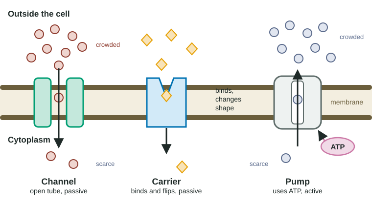

A cell membrane is a thin film of oil-like phospholipid tails sandwiched between water-loving heads. Small nonpolar molecules such as oxygen and carbon dioxide slip straight through it. Almost everything else a cell needs, from sodium and potassium ions to glucose and even water in large amounts, gets through only because proteins in the membrane give it a path. This page is about those proteins: channels, carriers and pumps.
Why some molecules need help
The middle of the lipid bilayer is hydrophobic: it is made of nonpolar fatty-acid tails. A charged particle such as Na⁺ or Cl⁻ would have to leave the water around it and enter that oily layer, and it cannot dissolve there. Polar molecules such as glucose have the same problem. So the bilayer on its own is a wall to ions and to most polar molecules.
Cells solve this with transport proteins, proteins that span the membrane and give particular substances a way across. When a substance moves through a transport protein from where it is more concentrated to where it is less concentrated, the movement is called facilitated diffusion. "Facilitated" means helped. It is still diffusion: the substance moves down its concentration gradient, and the cell spends no ATP.

Channel proteins: tunnels through the membrane
A channel protein folds into a ring with a water-filled tunnel down the middle (Figure 1, left). The tunnel is lined with polar or charged parts of the protein, and its width and lining let only certain particles through. A potassium channel passes K⁺ but not Na⁺, even though Na⁺ is smaller. Aquaporins, the water channels you met in topic 2.4, are channel proteins that pass water molecules in single file.
Because nothing has to bind and let go, channels are fast. One open channel can pass millions of ions per second.
Gated channels
Most ion channels are not open all the time. A gated channel has a part that opens or closes the tunnel:
- A ligand-gated channel opens when a specific signaling molecule binds to it. When a nerve cell signals a muscle cell, a signaling molecule binds channels on the muscle cell, they open, and Na⁺ rushes in.
- A voltage-gated channel opens when the charge difference across the membrane changes. Nerve cells use these to pass a signal along their length.
A gate controls when ions flow. It does not give them energy: once a gated channel opens, ions still move down their gradient.
Carrier proteins, and why they have a speed limit
A carrier protein works more like a revolving door (Figure 1, middle). It has a binding site that fits one kind of molecule. The molecule binds on one side, the carrier changes shape, and the molecule is released on the other side. The glucose carrier in red blood cells works this way.
Each carrier handles only a few molecules at a time, and the membrane has a fixed number of carriers. That gives carrier transport a speed limit. At low concentrations, adding more glucose outside means more carriers are busy, and uptake speeds up. Once nearly every carrier is busy, adding more glucose barely helps: the uptake rate levels off.
Worked example: reading an uptake curve. Red blood cells take up glucose at 12.9 nmol/min when the outside concentration is 10 mM and at 15.0 nmol/min at 20 mM. Doubling the concentration changed the rate by (15.0 − 12.9) ÷ 12.9 × 100 ≈ 16%.
A molecule that crosses the bilayer by simple diffusion would roughly double its rate when its concentration doubled (a 100% increase). A small increase like 16% means the transport proteins are nearly all occupied. Rule of thumb: a straight-line uptake graph suggests simple diffusion; a curve that levels off suggests a limited number of transport proteins.
Carriers are also specific: a molecule with a similar shape can compete for the same binding site and slow transport of the normal one. Competition is one of the clearest experimental signs that a carrier is involved.
Pumps: moving things uphill
Channels and carriers can only let substances run downhill, from crowded to scarce. To move a substance the other way, against its gradient, a cell needs a pump: a transport protein that spends energy, usually from ATP. That is active transport (topic 2.5).
The best-known pump is the sodium-potassium pump in animal cell membranes. Each cycle:
- Three Na⁺ ions from the cytoplasm bind to the pump.
- ATP hands a phosphate group to the pump, and the pump changes shape so it opens to the outside.
- The three Na⁺ ions are released outside.
- Two K⁺ ions from outside bind.
- The phosphate comes off, the pump snaps back to its first shape, and the two K⁺ ions are released inside.
So for each ATP: 3 Na⁺ out, 2 K⁺ in. Over time this keeps Na⁺ about ten times more concentrated outside the cell than inside, and K⁺ about thirty times more concentrated inside than outside. A resting cell can spend a large share of its ATP running these pumps.
Comparing the three
| Channel | Carrier | Pump | |
|---|---|---|---|
| How it moves things | Open tunnel | Binds, changes shape, releases | Binds, uses ATP to change shape |
| Direction | Down the gradient | Down the gradient | Against the gradient |
| Energy from the cell | None | None | ATP |
| Speed | Very fast | Slower; levels off when all carriers are busy | Slower; levels off too |
| Example | Aquaporin, K⁺ channel | Glucose carrier in red blood cells | Sodium-potassium pump |
Electrochemical gradients and the membrane potential
For an uncharged molecule like glucose, only the concentration difference matters. Ions also carry charge, so they feel a second push. Opposite charges attract: a positive ion is drawn toward a negative region. The combined push from the concentration difference and the charge difference is the ion's electrochemical gradient.
In a resting animal cell, the inside is negative compared with the outside. This charge difference is the membrane potential, about −70 millivolts (mV) in a resting nerve cell. It arises in two steps:
- The sodium-potassium pump builds the Na⁺ and K⁺ gradients. Because it moves three positive charges out for every two in, it also adds a little negative charge inside.
- Most of the charge difference comes from K⁺ leaking out through potassium channels that stay open. Each K⁺ that leaves takes a positive charge with it and leaves a negative charge (on proteins and other large molecules that cannot leave) behind.
Now look at Na⁺. It is crowded outside, so diffusion favors entry. It is positive and the inside is negative, so charge favors entry too. Both parts of its electrochemical gradient point inward. That is why, the moment a sodium channel opens, Na⁺ floods in. A gradient is stored energy, like water held behind a dam; the cell spends ATP to raise the water and spends the gradient later to do work.
Common mistakes
- "A protein is involved, so energy is used." No: channels and carriers in facilitated diffusion are passive. Energy depends on direction, not on whether a protein helps.
- "Facilitated diffusion is faster than simple diffusion at every concentration." Carriers have a ceiling. At high enough concentrations, a molecule crossing the bilayer directly can keep speeding up while carrier transport has leveled off.
- "Water only crosses through aquaporins." Some water slips through the bilayer; aquaporins make it much faster.